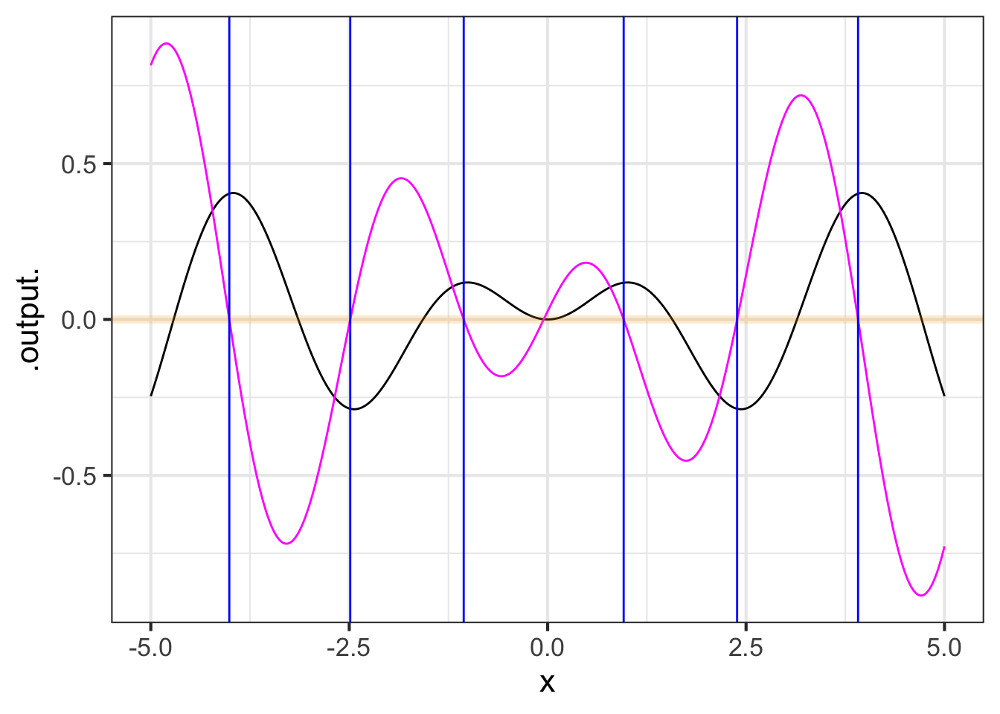

f_description <- x^2 * sin(x) + 3 ~ x # a tilde expression20 Computing derivatives
To differentiate a function \(g(x)\) means simply to produce the corresponding function \(\partial_t g(x)\). This is often called “finding the derivative,” language that resonates with the high-school algebra task of “finding \(x\).” Rather than conjuring an image of searching high and low for a missing function, it’s more accurate to say, “compute the derivative.”
In this chapter we’ll introduce two ways of computing a derivative. For simplicity we will write \(x\) for the with-respect-to input, although in practice you might be using \(t\) or \(z\) or something else.
- Symbolic differentiation, which uses a set of re-writing rules
- Finite-differencing, which is based directly on the \({\cal D_x}\) operator
In the days when functions were always presented using formulas, symbolic differentiation was usually the only method taught. Nowadays, when functions are just as likely to be described using data and an algorithm, finite-differencing provides the practical approach.
20.1 A function from a function
Recall that the goal of differentiation is to make a function out of an already known function. We’ll call the already known function \(g(x)\). In ?sec-change-relationships we’ve outlined the properties that the new function should have and gave a nice naming convention, \(\partial_x g(x)\) that shows where the new function comes from. In this section we’ll put that aside and focus on the question of what it means to “make a function.”
When mathematics is done with paper and pencil, “making a function” is a matter of writing a formula, such as \(x^2 \sin(x) + 3\) and sometimes giving a name to the formula, e.g. \(h(x) \equiv x^2 \sin(x) + 3\). We are essentially writing something down that will make sense when viewed by another person trained in the conventions of mathematical notation.
For a computer, on the other hand, a function is a definite kind of thing. We “make a function” by creating that kind of thing and, usually, giving it a name. We evaluate a function—that is, apply the function to inputs to produce an output—by using specific punctuation, which in R involves the use of parentheses, for instance name(input).
The computer language itself provides specific means to define a new function. In R/mosaic, you first construct a tilde expression naming the function inputs (right side of the tilde) and specifying the algorithm of that function (left side of the tilde), as with this formula:
On its own, f_description cannot be used like a function because it was constructed as something else: a tilde expression. Trying to use f_description in the way one uses a function produces an error.
f_description(2)
Error in f_description(2): could not find function "f_description"In between the tilde expression and the final result—a function—is software that translates from tilde-expressions into functions:
f <- makeFun(f_description)The new creation, f() can now be used like any other function, e.g.
f(2)
## [1] 6.63719Down deep inside, makeFun() uses a more basic function-creation syntax which looks like this
function(x) {x^2 * sin(x) + 3}
## function(x) {x^2 * sin(x) + 3}You can see all the same information that was in the tilde description, just arranged differently.
Almost every computer language provides something like function. The internal workings of function are elaborate and detailed … only advanced programmers need to be aware of them. This, in much the same way as it’s unnecessary to understand the workings of a transistor in order to use a computer, or comprehend the biochemistry of a COVID vaccine in order to benefit from it.
In the same spirit as makeFun(), which translates a tilde-expression into the corresponding function, in R/mosaic you have D() which takes a tilde expression and translates it into the derivative of the function described.1 For example:
D(f_description)
## function (x)
## x * (2 * sin(x) + x * cos(x))20.2 Finite differencing
You can use the definition of the slope function \[{\cal D}_x f(x) = \frac{f(x+0.1) - f(x)}{0.1}\] to create an approximation to the derivative of any function. Like this:
g <- makeFun(sin(2*x)*(pnorm(x/3)-0.5) ~ x)
dg <- makeFun((g(x+0.1) - g(x))/0.1 ~ x)Whenever you calculate a derivative function, you should check against mistakes or other sources of error. For instance, whenever the derivative is zero, the original function should have an instantaneous slope of zero. Figure 20.1 shows a suitable plot for supporting this sort of check.
zeros_of_dg <- Zeros(dg(x) ~ x, domain(x=-5:5))
slice_plot(g(x) ~ x, domain(x=-5:5), npts=500) %>%
slice_plot(dg(x) ~ x, color="magenta", npts=500) %>%
gf_hline(yintercept = ~ 0, color = "orange", size=2, alpha=0.2) %>%
gf_vline(xintercept = ~ x, data=zeros_of_dg, color="blue")
Look very closely at Figure 20.1, particularly at the places where the blue vertical markers cross the function \(g(x)\) (black). They should cross exactly at the flat zone, but they are a little shifted to the left. (You might have to zoom in on the plot to see the offset between the vertical blue marker and the local maximum of the function.) That’s the sense in which the finite-difference approach gives an approximation. The small left-shift stems from the use of 0.1 in the definition of the zero function. Use a smaller value, say 0.01 or 0.001, and you won’t be able to see the shift at all.
In modeling work, there’s nothing wrong with an approximation so long as it is good enough for your purposes. We picked the value 0.1 for our definition of the slope function because it works very well with the pattern-book functions. Here, “very well” means you can’t easily see in the graph any deviation compared to the exact derivative.
When a calculation can be done exactly (without outrageous effort) it certainly makes sense to use the exact method. However:
- It’s useful to have an easy, approximate method always at hand. This lets you check the results of other methods for the possibility of some blunder or mis-conception. The slope function approach to differentiation is certainly easy, and if you think the approximation isn’t good enough, then instead of 0.1 use something smaller. (Section 19 discusses how small is too small.)
- The computer makes it practical to employ the slope function as a useful approximation to the derivative. There are many other mathematical methods that the computer has made feasible, for instance the methods of machine learning. These methods create functions that sometimes cannot be handled by the traditional (“exact”) methods of differentiation.
20.3 The slope-function operator
Take a look at the statement we used to construct the slope function of g():
dg <- makeFun((g(x+0.1) - g(x))/0.1 ~ x)There is almost nothing about this statement that has anything to do with the specifics of how we defined g(); we could have used any \(g()\). The “almost” in the previous sentence is about the choice of 0.1, which isn’t guaranteed to be small enough.
In today’s world, considerable mathematical content is conveyed to users not directly with formulas but with software that implements the formulas. And in software, it’s a good idea to have a name for each operation so that the readers and authors of software have a completely explicit indication that a particular operation is being used.
When you have many slope functions to compute in some application, it can be error prone to write many statements that are versions of
dg <- makeFun((g(x+0.1) - g(x))/0.1 ~ x)It’s too easy to make a mistake in copying this over, producing a wrong computation that can be hard to detect in the code. For instance, each of these statements looks a lot like the above, but all of them are different and none is constructing a slope function:
df <- makeFun((f(x-0.1) - f(x))/0.1)
dh <- makeFun((h(x+0.1) - f(x))/0.1)
du <- makeFun((u(x+0.1) - u(x))/1.0)
dg <- makeFun(g(x+0.1) - g(x)/0.1)Much easier to read and more reliable would be something like this:
df <- slopeFun(f(x) ~ x)
dh <- slopeFun(h(x) ~ x)
du <- slopeFun(u(x) ~ x)Creating such an R operator is a programming task and in that sense beyond the scope of this course. Still, it’s a good idea to get in the habit of reading programming code. So here goes …
Creating a slopeFun() operator:
- Instead of
makeFun()which is really just maknig for mathematical functions, R programmers use a construction namedfunction(). The name of the arguments goes inside the parentheses. The function algorithm goes between curly braces:{ } - We’re going to use a tilde expression as the input to
slopeFun(). This is how the other R/mosaic operators work. That will be easier for the user and will also give us access to those other operators if we need them in writingslopeFun(). - The object returned by the
slopeFun()operator will be, of course, a function. We’ve been usingmakeFun()to make our mathematical functions, so expect to see that in the code forslopeFun(). - There’s the matter of whether 0.1 is small enough. So let’s use an
hargument in place of 0.1 that we can change when needed.
Putting this together, here is a slopeFun() operator that takes a tilde expression (as do makeFun() and slice_plot()) and produces a new mathematical function that is the slope function for the mathematical function described in the tilde expression. (There are a couple of R programming elements in slopeFun() that you aren’t expected to understand completely. But do try reading the code to see what sense you can make of it.)
# two arguments, a tilde expression and a choice for h
# with a default value
slopeFun <- function(tilde, h=0.1) {
# Turn the tilde expression into a function
g <- makeFun(tilde)
# just like before, with h instead of 0.1
makeFun((g(x + h) - g(x))/h ~ x, h=h)
}Another important advantage of centralizing computations in a single operator is that the operator can be made more sophisticated without being harder to use. For instance, R/mosaic provides the D() operator for computing derivatives. This knows the rules for symbolic differentiation that will be introduced in Section 23 and switches to a finite-difference method (like slopeFun(), but more sophisticated) when symbolic differentiation isn’t applicable.
In practice, instead of home-brewed functions like slopeFun(), you can use the R/mosaic D() instead, which takes a more careful approach to the computer numerics and uses symbolic differentiation whenever possible to give results without numerical error.
20.4 Symbolic differentiation
Symbolic differentiation is the process of taking a formula and translating it to a new formula according to certain patterns or rules. Each rule is ultimately derived from the definition of the slope function and the differencing operator.
As you recall, the differencing operator \(\diff{x}\) turns a function into its slope function \[\diff{x} f(x) \equiv \frac{f(x+h) - f(x)}{h}\]
20.4.1 The line rule
Let’s look at one where we already know the result: The straight line function \(\line(x) \equiv a x + b\) has a slope function that is constant: \(\diff{x}\line(x) = a\)
\[\diff{x}\line(x) = \frac{\line(x+h) - \line(x)}{h} = \frac{\left[\strut a (x+h) + b\right] - \left[\strut a x + b\right]}{h} = \frac{ah}{h} = a\] The derivative is the slope function with \(h\) made as small as possible. It’s tempting to think of this as \(h = 0\), but that would imply dividing by zero in the differencing operator.
Being wary about the possibility of dividing by zero, mathematicians adopt a convention which indicates clearly that \(h\) is to be small, but not zero. This convention is marked with the notation \(\lim_{h \rightarrow 0}\), which means “as close as you can get to zero, but not zero exactly”.
\[\partial_x \line(x) \equiv \lim_{h\rightarrow 0} \frac{\line(x+h) - \line(x)}{h} =\\ \ \\ = \lim_{h\rightarrow 0} \frac{a h}{h} = a\]
This derivation is unarguably correct for any non-zero \(h\).
This short derivation gives us a basic differentiation rule which we can divide into 3 special cases.
- Line rule: \(\partial_x ax + b = a\)
- \(\partial_x ax = a\). The function \(ax\) is \(\line(x)\) with \(b=0\).
- \(\partial_x b = 0\). The function \(b\) is \(\line(x)\) with \(a=0\) and thus is the constant function.
- \(\partial_x x = 1\). The function \(x\) is \(\line(x)\) with \(a=1\) and \(b=0\).
Remember that \(\partial_x f(x)\) is always a function no matter what kind of function \(f(x)\) is. The functions associated with the line rule are all constant functions, meaning the output doesn’t depend on the input.
20.4.2 The square rule
Only for the \(\line()\) function and its three special cases is the derivative a constant function. And \(\line()\) is the only function for which the \(h\) in the differencing operator disappears on its own. For instance, consider the square function: \(g(x) \equiv x^2\).
\[\begin{eqnarray} \partial_x [x^2] & = & \lim_{h\rightarrow 0}\frac{(x+h)^2 - x^2}{h}\\ & = & \lim_{h\rightarrow 0}\frac{(x^2 + 2 x h + h^2) - x^2}{h}\\ & = & \lim_{h\rightarrow 0}\frac{2 x h + h^2}{h} \\ & = &\lim_{h\rightarrow 0} [2x + h]\\ \end{eqnarray}\]
It’s accepted that the limit of a sum is the sum of the limits, so … \[\lim_{h\rightarrow 0} \left[\strut 2 x + h\right]= \lim_{h\rightarrow 0} 2x + \lim_{h\rightarrow 0}h\] The limit of something not involving \(h\) is just that thing, giving \[\lim_{h\rightarrow 0}2x = 2x\ .\] Finally, when an expression including \(h\) doesn’t involve division by \(h\), we can remove the \(\lim_{h\rightarrow 0}\) and just use \(h=0\) instead, so \[\lim_{h\rightarrow 0} h = 0\ .\]
Putting these together gives
\[\partial_x [x^2] = 2x + \lim_{h\rightarrow 0}h = 2x\]
We’ll write this as another differentiation rule.
- Quadratic rule: \(\partial_x [x^2] = 2x\)
20.4.3 The exponential rule
Let’s take on the exponential function \(h(x) \equiv e^x\):
\[\partial_x e^x = \lim_{h\rightarrow 0}\frac{e^{x+h} - e^x}{h} = e^x \lim_{h\rightarrow 0}\left[\frac{e^h - 1}{h}\right]\] At a glance, it can be hard to know what to make of \(\lim_{h\rightarrow 0} (e^h-1)/h\). Setting \(h=0\) in the denominator is perfectly legitimate and gives \(e^0 - 1 = 0\). But that still leaves the \(h\) in the numerator. Still, for any non-zero \(h\), the division is legitimate, so let’s see what happens as \(h \rightarrow 0\):
f <- makeFun((exp(h) - 1)/h ~ h)
f(0.1)
## [1] 1.051709
f(0.01)
## [1] 1.005017
f(0.001)
## [1] 1.0005
f(0.0001)
## [1] 1.00005
f(0.0000001)
## [1] 1
f(0.0000000001)
## [1] 1Setting \(h\) exactly to zero, however, won’t work: it produces NaN.
f(0)
## [1] NaNSince \(\lim_{h\rightarrow 0} (e^h-1)/h = 1\), we have
- Exponentiation rule: \(\partial_x e^x = e^x\)
20.4.4 The reciprocal rule
Still another example: the reciprocal function, written equivalently as \(1/x\) or \(x^{-1}\)
\[\begin{eqnarray} \partial x^{-1} & = &\lim_{h\rightarrow 0}\frac{\frac{1}{x+h} - \frac{1}{x}}{h} \\ & = & \lim_{h\rightarrow 0} \frac{\frac{x - (x+h)}{x(x+h)}}{h}\\ & = & \lim_{h\rightarrow 0}\frac{x - x+h}{x(x+h)h} = -\lim_{h\rightarrow 0}\frac{h}{x(x+h)h} \\ & = & -\lim_{h\rightarrow 0}\frac{1}{x^2 + hx} \end{eqnarray}\] So long as \(x \neq 0\), there is no divide-by-zero problem even when \(h=0\), but let’s see what the computer thinks:
g <- makeFun(-1/(x^2 + h*x) ~ h, x=10)
g(0.1)
## [1] -0.00990099
g(0.01)
## [1] -0.00999001
g(0.001)
## [1] -0.009999
g(0.0001)
## [1] -0.0099999
g(0.0000001)
## [1] -0.01
g(0.0000000001)
## [1] -0.01
g(0)
## [1] -0.01Setting \(h\) to zero in the last expression gives another differentiation rule:
- Reciprocal rule: \(\partial_x \frac{1}{x} = -\frac{1}{x^2}\)
20.4.5 Power-law rule
We don’t yet have the tools needed to prove a formula for the derivative of power-law functions, but we already have some instances where we know the derivative:
- \(\partial_x x^2 = 2 x\)
- \(\partial_x x^1 = 1\)
- \(\partial_x x^0 = 0\)
A rule that fits all these examples is \[\partial_x x^p = p\, x^{p-1}\ .\] For instance, when \(p=2\) the rule gives \[\partial_x x^2 = 2\, x^1 = 2 x\] since \(p-1\) will be 1$.
It’s not too hard to do the algebra to find the derivative of \(x^3\). According to the proposed rule, the derivative should be \[\partial_x x^3 = 3 x^2\ .\] Let’s check this via the definition of the derivative: \[\partial_x x^3 = \lim_{h \rightarrow 0}\frac{(x+h)^3 - x^3}{h}\] Direct multiplication \((x+h)(x+h)(x+h)\) gives \[(x+h)^3 = x^3 + 3\, x^2 h + 3\, x h^2 + h^3\] Consequently, the limit definition amounts to: \[\partial_x x^3 = \lim_{h\rightarrow 0}\frac{3\, x^2 h + 3\, x h^2 + h^3}{h} = \lim_{h\rightarrow 0} \left[\strut 3\, x^2 + 3\,x h + h^2\right]\] But there is no divide-by-\(h\) in sight, so we can resolve \(\lim_{h\rightarrow 0}\) to \(h=0\), giving \[\partial_x x^3 = 3 x^2\ ,\] consistent with the proposed rule.
Those familiar with the use of Pascal’s Triangle for finding the terms of binomial expansions such as \((x + h)^p\) will gain insight into the \(p x^{p-1}\) rule.
20.4.6 List of pattern-book rules
We’ll save for later the derivation of the derivatives of the other pattern-book functions, but note that the gaussian function is defined to be the derivative of the sigmoidal function.
| Name | \(f(x)\) | \(\partial_x f(x)\) |
|---|---|---|
| exponential | \(e^x\) | \(e^x\) |
| logarithm (natural) | \(\ln(x)\) | \(1/x\) |
| sinusoid | \(\sin(x)\) | \(\cos(x)\) |
| square | \(x^2\) | \(2x\) |
| proportional | \(x\) | \(1\) |
| constant | 1 | 0 |
| reciprocal | \(1/x\) or \(x^{-1}\) | \(-1/x^2\) |
| gaussian (hump) | \(\dnorm(x)\) | \(-x\, \dnorm(x)\) |
| sigmoid | \(\pnorm(x)\) | \(\dnorm(x)\) |

20.5 Exercises
20.6 Drill
Part i Which pattern-book function is the derivative of the sigmoid function pnorm()? That is, \[{\large \text{pnorm}(x)} \underset{\scriptsize \text{anti-diff}}{{\stackrel{\text{diff}}{\ \ \ \ {\Huge\rightleftharpoons}\ \ \ }}} {\LARGE ?}\]
Gaussian dnorm(x)Exponential \(e^x\)Sinusoid \(\sin(x)\)Constant \(1\)Reciprocal \(1/x\)
Part ii Which pattern-book function is the anti-derivative of the reciprocal \(1/x\)? That is, \[{\LARGE ?} \underset{\scriptsize \text{anti-diff}}{{\stackrel{\text{diff}}{\ \ \ \ {\Huge\rightleftharpoons}\ \ \ }}} {\large \frac{1}{x}}\]
NOTE: Differentiation produces a “child” function from a “parent” function. The child is the derivative of the parent. Putting the relationship the other way, the parent is the anti-derivative of the child. “Derivative” and “anti-derivative” are two ways of looking at the same relationship between a pair of functions. So, if \(f(x)\) is the derivative of \(F(x)\), then \(F(x)\) is the anti-derivative of \(f(x)\).
- Gaussian \(\text{dnorm(x)}\)
- Logarithm \(\ln(x)\)
- Sinusoid \(\sin(x)\)
- Constant \(1\)
- Reciprocal \(1/x\)
Part iii Which pattern-book function is the anti-derivative of the gaussian \(\text{dnorm()}\)? That is, \[{\LARGE ?} \underset{\scriptsize \text{anti-diff}}{{\stackrel{\text{diff}}{\ \ \ \ {\Huge\rightleftharpoons}\ \ \ }}} {\large \text{dnorm}(x)}\]
NOTE: Differentiation produces a “child” function from a “parent” function. The child is the derivative of the parent. Putting the relationship the other way, the parent is the anti-derivative of the child. “Derivative” and “anti-derivative” are two ways of looking at the same relationship between a pair of functions. So, if \(f(x)\) is the derivative of \(F(x)\), then \(F(x)\) is the anti-derivative of \(f(x)\). In other words: \[{\large F(x)} \underset{\scriptsize \text{anti-diff}}{{\stackrel{\text{diff}}{\ \ \ \ {\Huge\rightleftharpoons}\ \ \ }}} {\Large f(x)}\]
- Gaussian \(\text{dnorm(x)}\)
- Logarithm \(\ln(x)\)
- Sigmoid \(\text{pnorm(x)}\)
- Constant \(1\)
- Reciprocal \(1/x\)
Part iv What is the derivative of the power-law function \(x^p\)?i That is, \[{\Large x^p} \underset{\scriptsize \text{anti-diff}}{{\stackrel{\text{diff}}{\ \ \ \ {\Huge\rightleftharpoons}\ \ \ }}} {\LARGE ?}\]
- \((p-1)\, x^{p-1}\)
- \((p-1)\, x^p\)
- \(p\, x^{p-1}\)
- \(\frac{1}{p} x^{p+1}\)
- \(p\, x^p\)
Part v There are two pattern-book functions whose second derivative is proportional to the function itself. Which are they?
- Sinusoid and gaussian
- Exponential and sigmoid
- Exponential and sinusoid
- Exponential and logarithm
Part vi What is the derivative of \(t^5\) with respect to \(t\)? That is, \[{\Large t^5} \underset{\scriptsize \text{anti-diff}}{{\stackrel{\text{diff}}{\ \ \ \ {\Huge\rightleftharpoons}\ \ \ }}} {\Large ?}\]
\(\frac{1}{4} t^5\)\(4 t^5\)\(5 t^4\)\(\frac{1}{5} t^4\)
Part vii What is \(\partial_x x^2\)?
\(2/x\)\(2\)\(2 x\)\(2 x^2\)
Part viii What is \(\partial_t \sin(x)\)
\(-\cos(x)\)0\(\cos(x)\)\(-\sin(x)\)
Part ix Suppose you know only this one fact about \(f(x)\), that \(\partial_{xx}\, f(7.3) = 1.6\). Which of these statements must be true?
- \(f(x)\) is concave up at \(x=7.3\), but eventually it will become concave down.
- \(f(x)\) is concave up and decreasing at \(x=7.3\)
- \(f(x)\) is increasing at \(x=7.3\).
- \(f(x)\) is concave up at \(x=7.3\)
Part x If \(f(x)\) is discontinuous at \(x=5\), can it possibly be smooth at \(x=6\)?
NoYes
Part xi If \(g(x)\) is discontinuous at \(x=1\), what will be the value of \(\partial_x g(x)\) at \(x=1\)?
- Depends on how big the gap is at the discontinuity.
- 0
- \(1/x\)
- The derivative isn’t defined at a discontinuity.
Part xii Which of the following is the correct construction for \(\partial_t g(t)\)?
- \(\lim_{x \rightarrow 0} \frac{g(t + h) - g(t)}{h}\)
- \(\lim_{h \rightarrow 0} \frac{g(t + h) - g(t)}{t}\)
- \(\lim_{h \rightarrow 0} \frac{g(t + h) - g(t)}{h}\)
- \(\lim_{h \rightarrow 0} \frac{g(t) - g(t+h)}{h}\)
Part xiii Which of these is a reasonable definition of a derivative?
- A derivative is the slope of a function.
- A derivative is a function whose value tells, for any input, the instantaneous rate of change of the function from which it was derived.
- A derivative is a function whose value tells, for any input, the instantaneous change of the function from which it was derived.
Part xiv Which one of these is not the derivative of a pattern-book function?
SigmoidZeroReciprocalOne
Part xv Which of the following shapes of functions is not allowed? You are strongly advised to try to draw each shape.
- Increasing and concave up.
- Decreasing and concave up.
- Increasing and concave down.
- Decreasing and concave down.
- None of them are allowed.
- All of them are allowed.
Mathematically, one differentiates a function, not a tilde expression. But differentiation requires specification of the with-respect-to-input, so R/mosaic implements differentiation by using tilde-expression syntax.↩︎